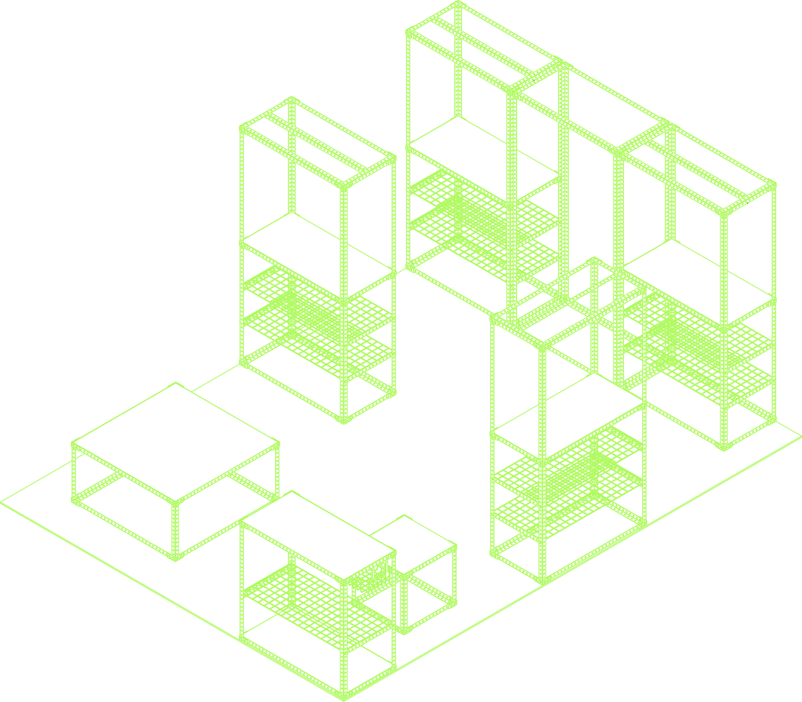
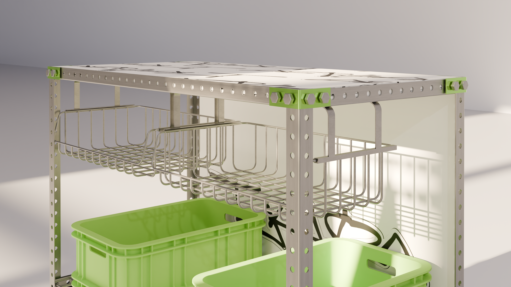
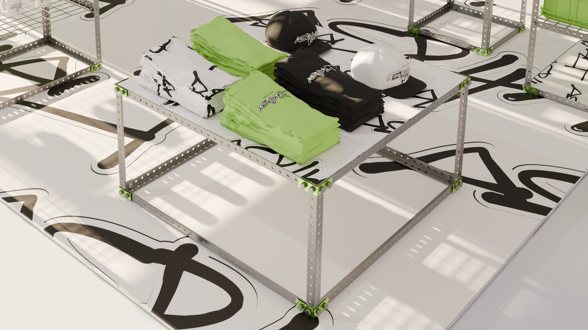
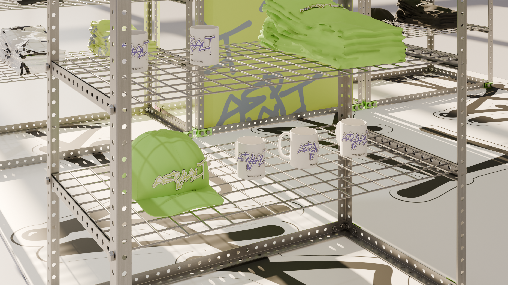
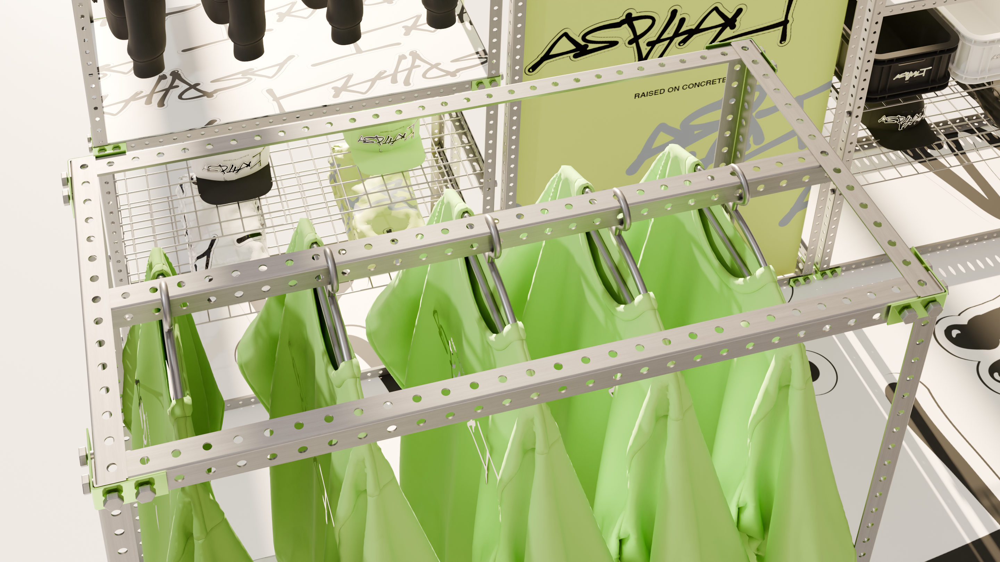
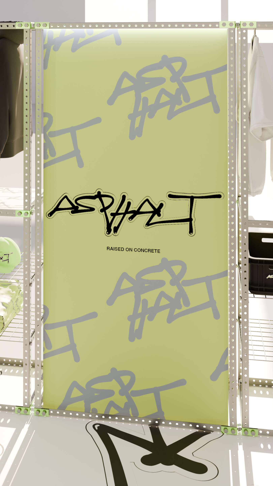

Anna Wilk

Zestaw wystawienniczy musi być lekki, kompaktowy i łatwy w transporcie, tak aby mógł być przewożony samochodem osobowym oraz przenoszony przez jedną osobę. Konstrukcja powinna umożliwiać szybki montaż i demontaż bez użycia specjalistycznych narzędzi.
System opiera się na powtarzalnych modułach, które można dowolnie zestawiać i rozbudowywać w zależności od potrzeb użytkownika oraz warunków przestrzennych wydarzenia. Jeden zestaw powinien umożliwiać różne układy ekspozycyjne, od małych stoisk po większe aranżacje.
Projekt zakłada niskie koszty produkcji i zakupu, aby był dostępny dla małych przedsiębiorstw. Jednocześnie forma powinna być neutralna, nowoczesna i estetyczna, umożliwiająca łatwą personalizację wizualną bez konieczności zmiany całej konstrukcji.
Elementy modułowe systemu stanowią aluminiowe, perforowane kątowniki o długościach 45, 90 i 180 cm, łączone za pomocą śrub z nakrętkami, podkładkami oraz łącznikami narożnymi. Standaryzacja komponentów umożliwia swobodne konfigurowanie i rozbudowę konstrukcji, dzięki czemu system pozwala na elastyczne dopasowanie formy stoiska do potrzeb użytkownika i warunków przestrzennych. System może zostać uzupełniony o blat ze sklejki brzozowej, o grubości 1,8cm pełniący również funkcję półki, druciane półki oraz koszyczek-szufladę, montowany do blatu za pomocą śrub lub mocnej taśmy dwustronnej.
Przykładowy układ modułów na stoisku 2x2m i 3x4m




